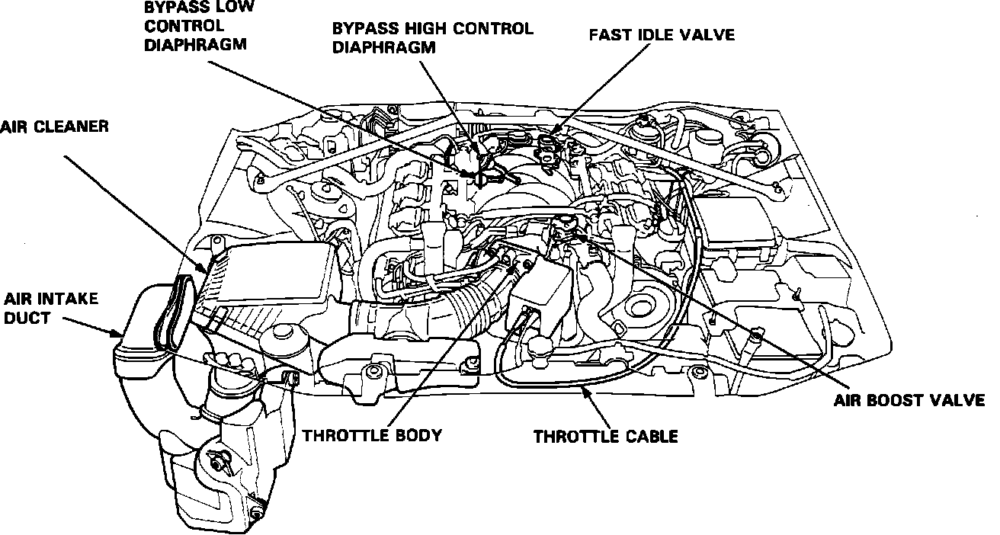

Starting Air Valve: Locations
Air Intake System:

AIR BOOST VALVE
Front of intake manifold, to the left of the throttle body.
AIR CLEANER
Right front of engine compartment.
AIR INTAKE DUCT
Right front of engine compartment, beneath air cleaner.
CHAMBER VOLUME CONTROL SYSTEM
Integral part of the intake manifold, (not shown). Control diaphragms located on the top rear of the intake manifold. (Referred to as BYPASS HIGH/LOW CONTROL DIAPHRAGMS in illustration.)
FAST IDLE VALVE
Top rear of the intake manifold.
THROTTLE BODY
Front of intake manifold.
THROTTLE CABLE
Routed from front of the intake manifold along left side of the engine compartment to the accelerator pedal.